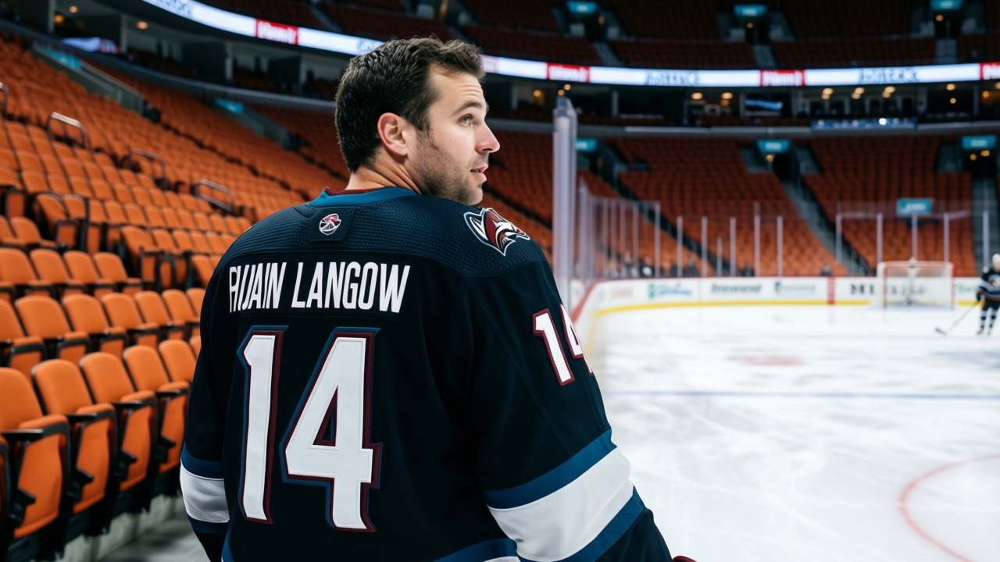

12,092 EMPTY SEATS, 24 GOALS IN 10, AND A 79-RATED CENTER COACHED OFF THE MAP
Phoenix can't score, can't sell tickets, and can't play its best center. $47.81 million buys you the league's worst offense and its quietest building.
 Mickey "The Mick" DonnellyColumnist, ex-goalie · The Penalty Box
Mickey "The Mick" DonnellyColumnist, ex-goalie · The Penalty Box
Phoenix coach: league-worst offense, league-worst attendance, a 79-rated center buried on the fourth line

 Phoenix Coyotes scored 24 goals in its last 10 games. Nobody else in the league managed fewer than 27. The Coyotes have 108 goals for on the season, the lowest total in a 30-team league, and their building holds 12,092 fans a night, the lowest attendance in hockey, with $80 tickets.
Phoenix Coyotes scored 24 goals in its last 10 games. Nobody else in the league managed fewer than 27. The Coyotes have 108 goals for on the season, the lowest total in a 30-team league, and their building holds 12,092 fans a night, the lowest attendance in hockey, with $80 tickets.
The coach has  Daymond Langkow75 at center on the third line and the second penalty kill. Langkow grades 79.
Daymond Langkow75 at center on the third line and the second penalty kill. Langkow grades 79.  Jan Hrdina72 grades 76.
Jan Hrdina72 grades 76.  Robert Reichel72 grades 76. Both 76s play first- and second-line center. The 79 skates checking minutes. His morale is 74. His contract has 0 years left.
Robert Reichel72 grades 76. Both 76s play first- and second-line center. The 79 skates checking minutes. His morale is 74. His contract has 0 years left.
You're paying $80 to watch a team that can't score
Phoenix has lost 18 games. It has scored 108 goals in 36 games. That's not a hockey team. That's a practice squad that happens to wear skates. Their 24 goals in the last 10 is the lowest any club managed over that stretch, and it tells you the offense isn't just bad, it's dying.
They spend $47.81 million and it buys them a per-point cost of $1.49 million, 15th in the league. The building is 12,092 deep, dead last. Prestige points sit at 310, 25th. They're 13-18-4 with a losing streak running and no visible plan to fix any of it.
THE BENCH DECISION IS THE STORY
Langkow played 36 games before the December break. He's 29, he makes $2.10 million, and his overall is 79. The slot chart puts him at fourth-line center and second-unit PK. Hrdina and Reichel, both 76, get the power play, the first and second draws, every situation the coach thinks matters.
A 79 at fourth-line center. That's a waste you can watch on television. That's a man with 0 years left on his deal getting 8.5 minutes while two men rated below him eat his ice time. The morale scale says 74 for Langkow, 10th-lowest in the league. You don't need a spreadsheet to tell you what that means. You just need eyes.
The club average morale is 88.6, 7th-worst. The attendance is the worst. The offense is the worst. The coach keeps doing the same thing.
THE ROOM DOESN'T CARE ABOUT YOUR STRUCTURE
Phoenix's revenue is $44.54 million and their profit is $16.01 million. The front office is fine. The building is half empty and the people who do show up watch a team that can't find the net. 12,092 fans at $80 a seat, into a building where the product is the lowest goal total in hockey and a third-line center rated 79 who can't crack the top six.
I don't care about the structure. I don't care about the system. Put the 79 on the second line, put him on the power play, and maybe the building fills up. Maybe the 24 goals in 10 games becomes 35. Or maybe the coach keeps his little chart and Phoenix finishes with the worst offense in hockey again.
The man is expiring. He's unhappy. He's better than the two guys in front of him. Play him or trade him. Just don't tell me the system says he belongs on the fourth line. The system is wrong.